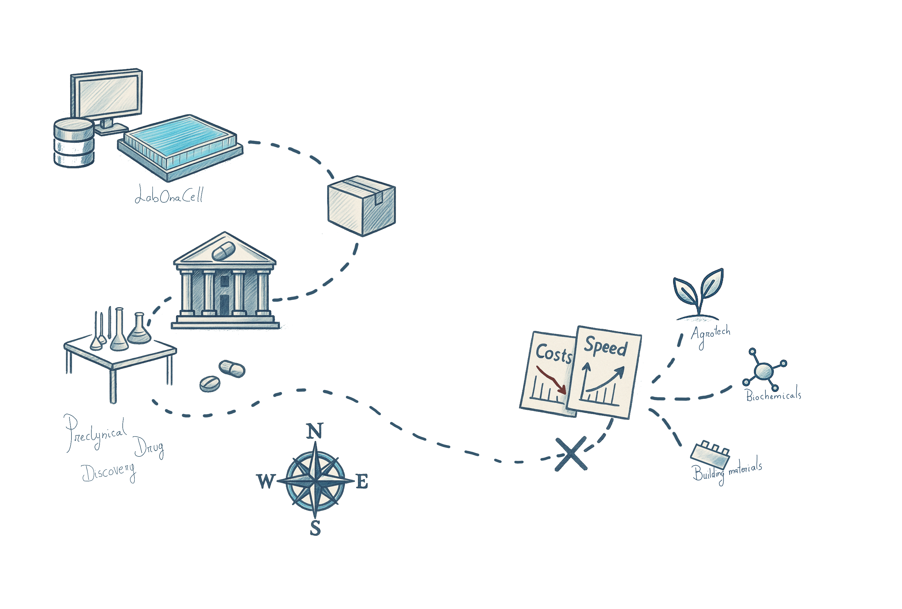
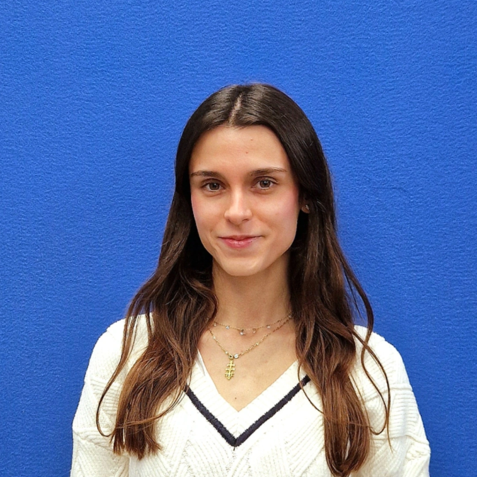

AjaxDNA was born from a real observation: biotechnology holds the key to transforming trillion-dollar industries, but the tools to engineer biology are too slow, too costly, and too unreliable. We're fixing that.
Average cost per successful drug development — including the heavy toll of failures in late-stage preclinical and clinical trials.
The time it takes for a new biotech product to reach the market. Most of this time is lost in slow, manual, sequential wet-lab iterations.
Typical production yield in fermentation and bioprocessing — far below theoretical maximum, and with high batch-to-batch instability.
Cost per kg of many fermented proteins today — making the shift to sustainable food production financially impossible for most producers.
Each design-build-test iteration takes months in traditional wet labs. Researchers are stuck waiting for physical results before they can iterate.
Production yields in fermentation and bioprocessing are often below 30% of theoretical maximum. Optimization is expensive, slow, and largely guesswork.
Unexpected changes in microorganism activity cause failures at scale, inconsistent trials, regulatory rejections, and massive financial losses.
We validated market fit by building easy-to-use interfaces for state-of-the-art bioinformatic protocols. Scientists could run complex analyses without deep computational expertise — proving the demand for better bioengineering tools.
Automated pipelines for protein engineering — enabling precise modifications and optimisation of biological molecules. This laid the computational foundation for our digital twin platform.
We automated metabolic model creation and FBA simulations — allowing exploration of what's biologically possible in any cell system before running a single experiment.
All prior work converges into the first comprehensive, validated whole-cell digital twin. Predict exactly what happens to your organism after any genetic modification — not just what is possible, but what is expected.
The definitive solution: hardware and software fully integrated. Patentable technology enabling thousands of parallel experiments and direct scale mapping to any production bioreactor.

We create data to optimize microbiological processes in drug discovery, microbiology and biomanufacturing through cell programming
Synthetic biology & technology management. Leads strategy, product vision, and the scientific direction of the AjaxDNA platform.
Bioinformatics & artificial intelligence. Architects the computational core — from metabolic modeling pipelines to the digital twin engine.

Chief marketing officer, designs strategies for communicating our science to the world, and go to market execution. Focuses on brand image and early-contact, top-of-funnel engagement.
Whether you're facing yield problems, bioreactor instability, or R&D cost pressure — let's talk about what AjaxDNA can do for your process.
Talk to Our Team →The chart models biological engineering penetration into traditional industries based on CAGR data from multiple industry reports.
Penetration rates represent the percentage of the total addressable market served by biological manufacturing processes. Data is sourced from 3 independent reports per sector; averages are calculated. AjaxDNA projections reflect our platform's demonstrated capacity to accelerate development and reduce cost barriers.